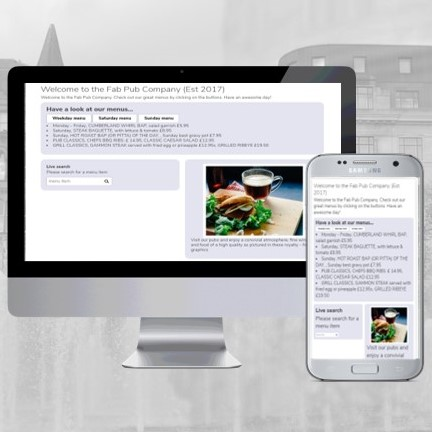
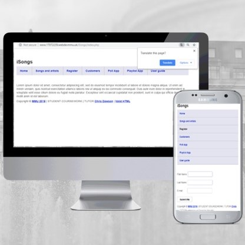

About Me

My name is Zunaira Arshad. I am currently a student at Manchester Metropolitan University studying Web Development Bsc (Hons).
I am a Front End Web Developer, UX Designer and I have photograpy skills. If you have a project that needs some creative injection, then that's where I come in!
My job is to build your website so that it is accessible and responsive but at the same time, attractive. My aim is to convey your message and identity in the most creative way possible.
Portfolio
Json
This is a web project that I created for year 2 of my University course. In this I created a real time search bar, and also a restaurant menu which shows items depending on which day it is. I created this using mainly Json, JavaScript and PHP, I am not an expirt with these coding languages but this is a part of my industry and I love experiencing new skills.
Isong
This website is called Isong, in this I have mainly created a background database. This collects users information, such as email addresses, names and who their favourite artists were through a mobile app which was created also by me.
Activity Addict

This website is my second year wesite developments team word. The website was coded by myself however, the wireframes, design, theme, content and all the rest was decided by all the team together.
Good Grub

Another piece of work created by me, this is also a website based on the course work for DPM (developing Project mangement) unit. My participation in this project was coding, structuring and designing the website where as the conent and photograpy was done by the other members in the team.
Portfolio
Json
This is a web project that I created for year 2 of my University course. In this I created a real time search bar, and also a restaurant menu which shows items depending on which day it is. I created this using mainly Json, JavaScript and PHP, I am not an expirt with these coding languages but this is a part of my industry and I love experiencing new skills.
Isong
This website is called Isong, in this I have mainly created a background database. This collects users information, such as email addresses, names and who their favourite artists were through a mobile app which was created also by me.
Websites
Activity Addict
This website is my second year wesite developments team word. The website was coded by myself however, the wireframes, design, theme, content and all the rest was decided by all the team together.
Good Grub
Another piece of work created by me, this is also a website based on the course work for DPM (developing Project mangement) unit. My participation in this project was coding, structuring and designing the website where as the conent and photograpy was done by the other members in the team.